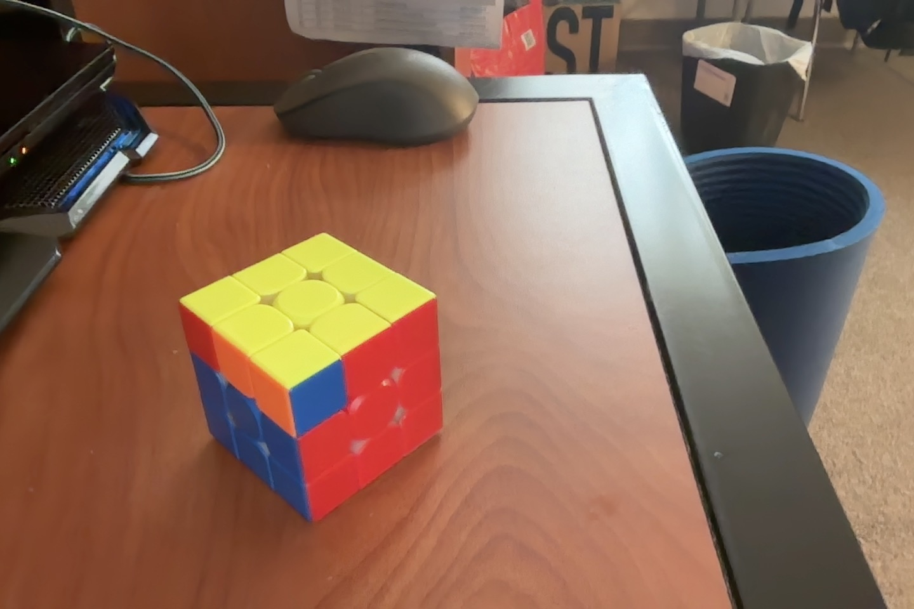

Goal
In this step of the cube, the ultimate goal is to complete the yellow side of the cube ( in technical terms, this is called OLL, a shorthand for orient last layer. ).
Complete the yellow cross
Drill the algorithms
Once you have completed the yellow cross, there are a total of 7 cases you can encounter. For each of these 7 cases, there is a corresponding algorithm with which you can solve the yellow side. Examine the shaped formed by yellow colors(stickers) of the cube, then execute the corresponding algorithm:
Case 1). “Fish”
Case 2). "Mirrored Fish"
Case 3). "Tank with sidelights"
Case 4). "Tank with headlights"
Case 5). "Cross with sidelights"
Case 6). "Cross with sidelights"
Case 7). "Overlapped square"